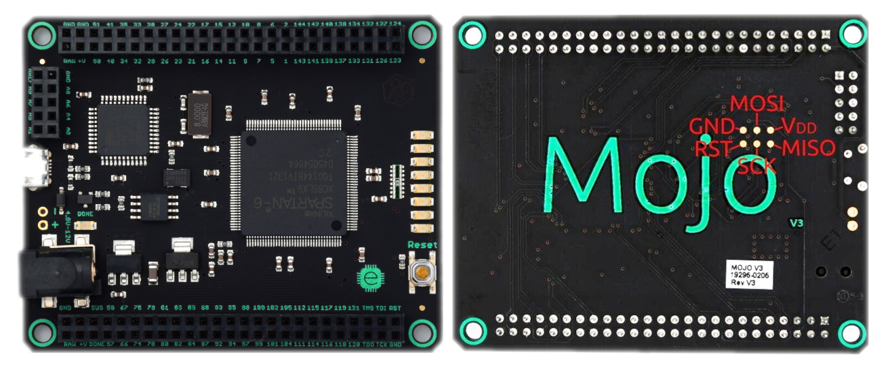
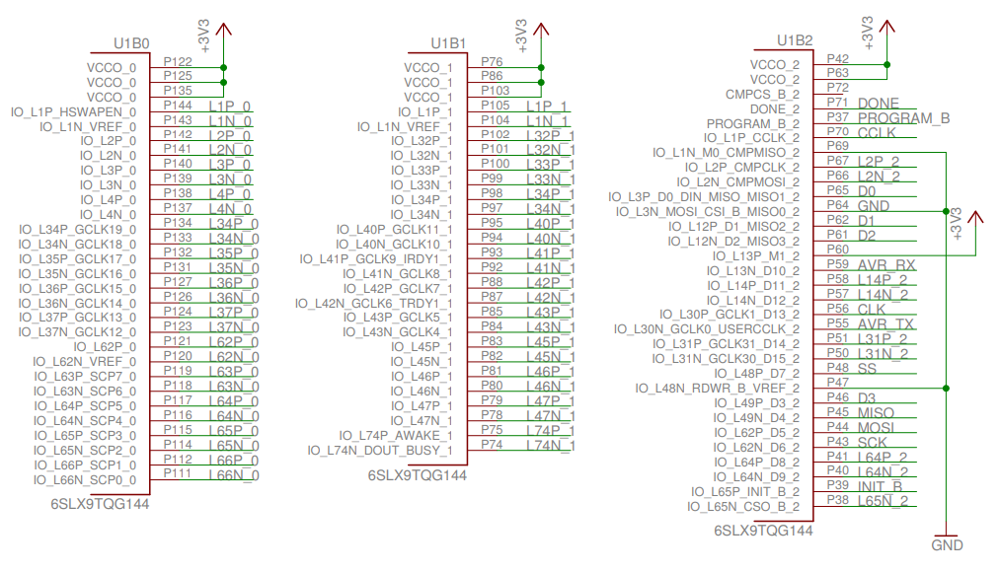
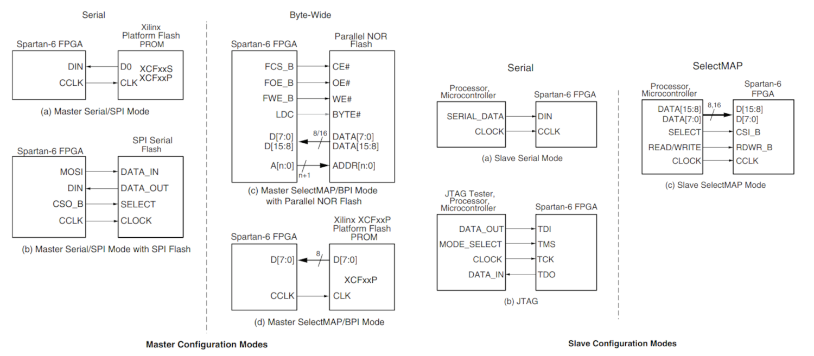
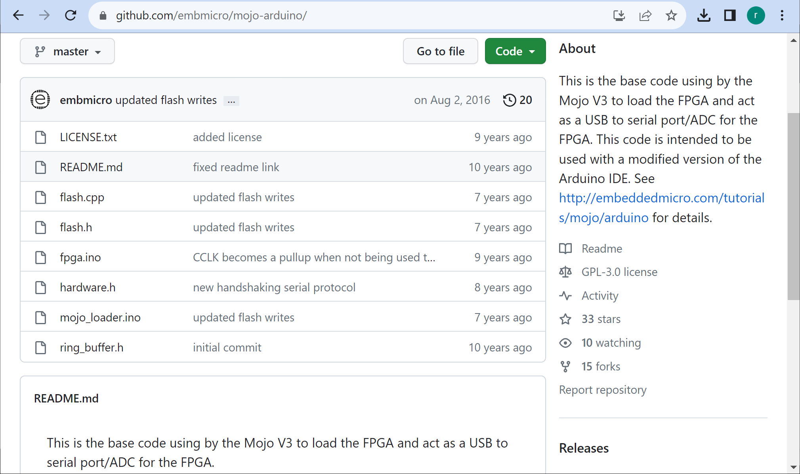
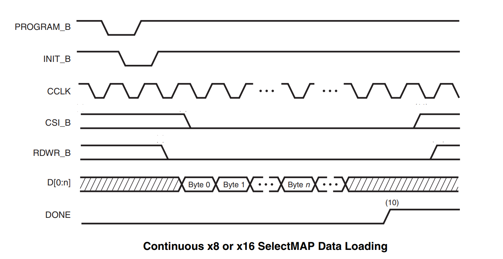
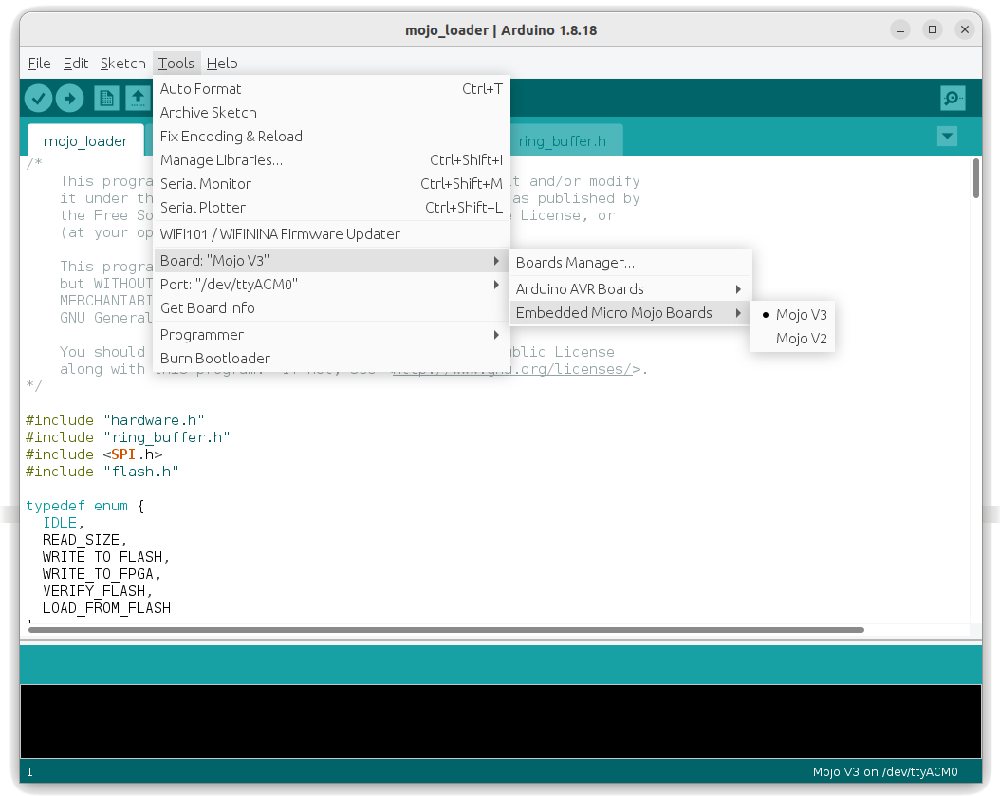
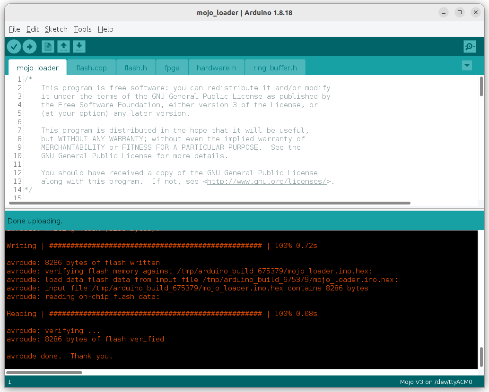
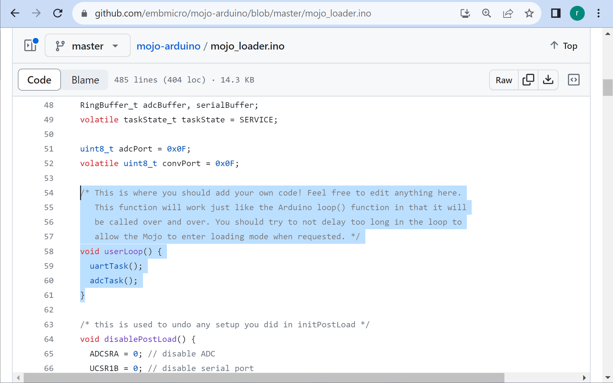
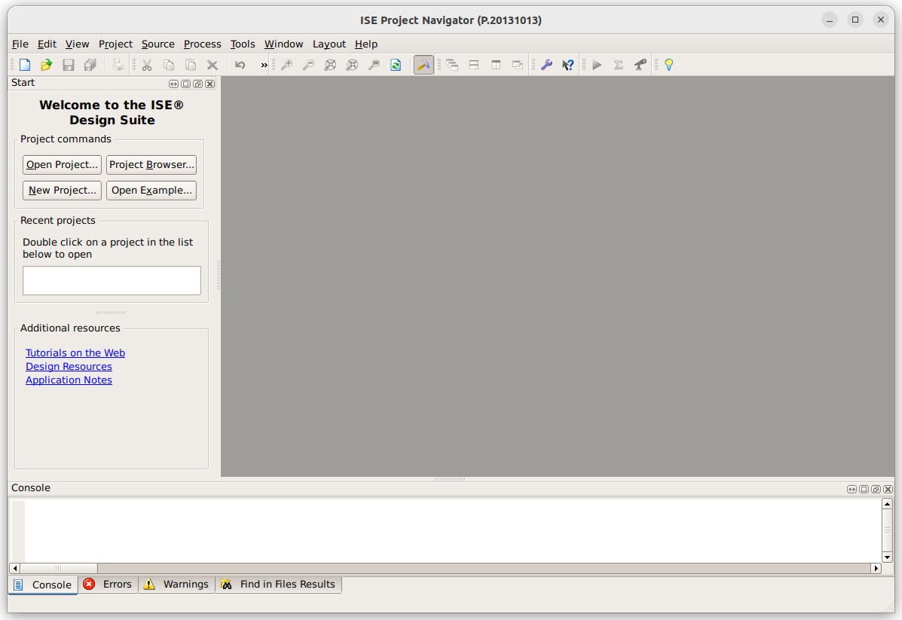

การทดลองใช้งานบอร์ด Mojo v3 - Xilinx Spartan 6 FPGA (legacy)#
▷ บอร์ด Mojo v3 FPGA#
บอร์ด Mojo v3 FPGA ของบริษัท Alchitry Labs (Embedded Micro) เป็นบอร์ดที่มีชิป Xilinx Spartan-6 FPGA และ MCU (Atmel ATmega32U4) อยู่บนบอร์ด บอร์ดนี้ได้มีการระดมทุนสร้างโดยเปิดเป็นโครงการใน KickStarter ในปีค.ศ. 2013

รูป: บอร์ด Mojo v3
ผู้เขียนได้เคยทดลองใช้บอร์ดนี้ครั้งแรกในช่วงประมาณปีพ.ศ. 2557 ในปัจจุบัน (ขณะที่กำลังเขียนบทความนี้) ดูเหมือนว่า ซอฟต์แวร์ "Xilinx ISE Design Suite - WebPACK" ของบริษัท Xilinx ที่จะต้องนำมาใช้ในการออกแบบวงจรสำหรับบอร์ด Mojo V3 ไม่ได้มีการอัปเดตมาตั้งแต่ปีค.ศ. 2013 (เวอร์ชันสุดท้ายคือ v14.7) และทางบริษัท Embedded Micro ก็ไม่ได้มีการจำหน่ายบอร์ดนี้อีกแล้ว
วัตถุประสงค์ของการเขียนบทความนี้คือ การรวบรวมข้อมูลเกี่ยวกับการใช้งานบอร์ด Mojo v3 และทดลองใช้งานอีกครั้ง (หลังจากที่ไม่ได้ใช้มาหลายปี)
ข้อมูลเชิงเทคนิคสำหรับบอร์ด Mojo v3 มีดังนี้
- FPGA: Xilinx Spartan-6 XC6SLX9-TQG144-2C
- Logic Cells: 9,152 (1,430 Slices / 5,720 LUT+FF pairs)
- MCU: Atmel ATmega32U4 (8-bit AVR, 3.3V @8MHz, Mojo v3 bootloader)
- Serial Flash: 4MBits (Microchip SST25VF040B-80-4I)
- I/O Voltage: 3.3V only (all I/O Banks)
- LDO Voltage Regulators:
- 5V to 3.3V: NCP1117ST33
- 3.3V to 1.2V: LD1117S12
- 1x Push Button (Reset)
- 8x LED (SMD, yellow-color)
- 1x Micro USB Connector
- Voltage Supply:
- +5V via the USB Connector
- +4.8 ~ +12V via DC Jack (5.5x2.1mm Barrel, center-positive)
- On-board Oscillator: 50MHz
- Software: Xilinx ISE WebPACK
- Schematic (.pdf)

รูป: ผังวงจร (เลือกมานำเสนอบางส่วน) ของบอร์ด Mojo v3

รูป: โหมดในการโปรแกรมชิป Spartan 6 (Source: Xilinx)
หากศึกษาจากซอร์สโค้ด mojo-arduino
จะทำให้เข้าใจขั้นตอนการทำงานของเฟิร์มแวร์ ได้ดีขึ้น

รูป: Github Repo สำหรับซอร์สโค้ด mojo-arduino.ino

รูป: การโปรแกรมชิป FPGA ในโหมด SelectMap โดยใช้ไมโครคอนโทรลเลอร์ (Source: Xilinx)
เมื่อเปิดไฟเลี้ยงและฮาร์ดแวร์เริ่มทำงาน เฟิร์มแวร์ Mojo Loader ในชิป ATmega32U4 จะเริ่มต้นอ่านข้อมูล "บิตสตรีม" จากชิปหน่วยความจำแฟลช (Loading Bitstream from Serial Flash) มาใช้ในการโปรแกรมชิป FPGA ให้ทำงานได้ตามวงจรดิจิทัลที่ผู้ใช้ได้ออกแบบไว้
เมื่อเฟิร์มแวร์ในชิป ATmega32U4 ได้ทำขั้นตอนการโปรแกรมชิป FPGA เสร็จสมบูรณ์แล้ว จากนั้นจึงรอการเชื่อมต่อผ่านทาง USB และตรวจสอบว่า มีการเชื่อมต่อมาจากคอมพิวเตอร์ผู้ใช้ เพื่อโปรแกรมชิป ถ้าเป็นกรณีนี้ ก็จะเข้าสู่โหมดการโหลดข้อมูลและเขียนข้อมูลไปยังหน่วยความจำ ซึ่งมีสองกรณีคือ
- การเขียนข้อมูลลงใน SRAM-based Configuration Memory
จะใช้โหมดที่เรียกว่า MCU-driven 8-bit SelectMAP Configuration
โดยใช้ขาสัญญาณระหว่าง MCU เชื่อมต่อกับ FPGA ดังนี้
PD5-->INIT_BPC7-->PROGRAM_BPC6<--DONEPD0-->CCLKPB7..PB0-->D[7..0]
- การเขียนข้อมูลลงในชิปหน่วยความจำ Serial Flash
ใช้ขาสัญญาณเชื่อมต่อระหว่าง MCU กับชิปหน่วยความจำ ดังนี้
PB1-->SPI_SCKPB2-->SPI_MOSIPB3<--SPI_MISOPD1-->CS_FLASH
แนะนำให้ศึกษาในรายละเอียดเพิ่มเติมเกี่ยวกับการโปรแกรมชิป Spartan-6 FPGA จากเอกสารของผู้ผลิต: "UG380 Spartan-6 FPGA Configuration User Guide"
ข้อสังเกต: ยังมีอีกวิธีหนึ่งที่เลือกใช้ได้สำหรับการโปรแกรมชิป FPGA ก็คือ การใช้ JTAG Interface แต่ต้องใช้อุปกรณ์อย่าง เช่น Xilinx Platform USB Cable
การเขียนข้อมูลใหม่ลงในชิปหน่วยความจำแฟลชที่อยู่บนบอร์ด Mojo v3 จะต้องอาศัยเฟิร์มแวร์ของ Mojo v3 Loader ที่อยู่ในชิป ATmega32U4
เฟิร์มแวร์ในชิป ATmega32U4 ยังมีหน้าที่อีก 2 งาน (เรียกว่า User Tasks)
- ADC Task: ทำหน้าที่เป็น SPI Master หากมีการส่งสัญญาณมาจากวงจรภายในชิป FPGA เพื่อให้อ่านค่าสัญญาณอินพุต หนึ่งใน 8 ช่องอินพุตที่เลือก (ADC0..ADC7) โดยใช้วงจร ADC ภายในชิป ATmega32U4 แล้วเขียนข้อมูลไปยัง FPGA ดังนั้นจะต้องมีวงจรใน FPGA ที่ทำหน้าที่เป็น SPI Slave เพื่อคอยรับค่าจำนวน 2 ไบต์ จากชิป MCU แล้วนำไปใช้ต่อไป
- UART Task: ทำหน้าที่เป็นตัวเชื่อมต่อ SerialUSB to Hardware Serial ไปยังวงจรในชิป FPGA สามารถส่งข้อมูลได้ทั้งสองทิศทาง (ถ้ามีการสร้างวงจร UART เอาไว้)
▷ การติดตั้ง Mojo v3 Loader ลงใน ATmega32U4#
คำเตือน: ขั้นตอนนี้ไม่จำเป็นต้องทำ ถ้าไม่ต้องการเปลี่ยนแปลงเฟิร์มแวร์เดิม Mojo v3 Loader ที่มีอยู่ในชิป ATmega32U4 ของบอร์ด Mojo v3
เฟิร์มแวร์ในชิป ATmega32U4 หากเป็นรุ่นเก่า ได้มีการติดตั้ง Atmel DFU Bootloader เอาไว้ในหน่วยความจำแฟลชภายในชิป ถ้าเสียบสาย USB เชื่อมต่อบอร์ดกับคอมพิวเตอร์ผู้ใช้แล้ว จากนั้นให้ใช้ลวดสายไฟเชื่อมต่อจุดสัมผัสด้านใต้บอร์ดที่ตำแหน่งขา RST (Reset) ของ ATmega32U4 และ GND ช่วงเวลาสั้น ๆ ก็จะเข้าสู่ Atmel DFU Bootloader แล้วอัปเดตเฟิร์มแวร์ใหม่ได้ (ในส่วนที่เป็น User Application แต่ส่วนที่เป็น Atmel DFU Bootloader จะไม่ถูกเขียนทับ)
ถ้าใช้ Ubuntu Linux ก็สามารถใช้คำสั่ง dfu-programmer ลองเขียนไฟล์ .hex ได้ไม่ยาก
# Check the USB device with VID=03eb and PID=2ff4.
$ sudo lsusb | grep "ID 03eb:2ff4"
Bus 001 Device 083: ID 03eb:2ff4 Atmel Corp. atmega32u4 DFU bootloader
# Install the dfu-programmer.
$ sudo apt install dfu-programmer
# Download mojo-loader firmware from github.
$ FW=mojo-bootloader/raw/master/mojo-v3-loader.hex; \
wget https://github.com/embmicro/$FW
# Erase on-chip User-Application Flash
$ sudo dfu-programmer atmega32u4 erase
# Flash the User Application (.hex)
$ sudo dfu-programmer atmega32u4 flash mojo-v3-loader.hex
# Reset the bootloader
$ sudo dfu-programmer atmega32u4 reset
▷ การติดตั้ง Arduino-Compatible Bootloader & Mojo v3 Loader#
คำเตือน: ขั้นตอนนี้ไม่จำเป็นต้องทำ ถ้าไม่ต้องการเปลี่ยนแปลง Bootloader เดิมที่มีอยู่ในชิป ATmega32U4 ของบอร์ด Mojo v3
Atmel DFU Bootloader ไม่รองรับการเขียนโค้ดและอัปโหลดด้วย Arduino IDE
หากต้องการใช้งาน Arduino-Compatible Bootloader สำหรับ ATmega32U บนบอร์ด
Mojo V3 ผู้ใช้จะต้องติดตั้ง Arduino Bootloader ที่มีชื่อว่า
mojo-v3-Caterina.hex
ในกรณีจะต้องใช้อุปกรณ์ ISP Programmer ร่วมด้วย อย่างเช่น USBasp (เลือกแรงดันไฟเลี้ยงเป็น +3.3V ไม่ใช่ +5V) และจะต้องทำผ่านทางจุดสัมผัส (Pads) สำหรับ ISP: In-System-Programming (2x3 Pins) ซึ่งอาจจะไม่สะดวกสำหรับผู้ใช้ทั่วไป
# Download the Bootloader file.
$ FW=mojo-bootloader/raw/master/mojo-v3-Caterina.hex; \
wget https://github.com/embmicro/$FW
# Check the USB device with VID=16c0 and PID=05dc.
$ lsusb | grep "ID 16c0:05dc"
Bus 001 Device 002: ID 16c0:05dc Van Ooijen Technische Informatica
# Install AVRdude program.
$ sudo apt install avrdude
# Use AVRdude to program the firmware file.
$ sudo avrdude -u -c usbasp-clone -p m32u4 \
-U flash:w:./mojo-v3-Caterina.hex:a \
-U lfuse:w:0xFF:m -U hfuse:w:0xDF:m -U efuse:w:0xFF:m
เมื่อได้ติดตั้ง Mojo v3 - Arduino-Compatible Bootloader สำเร็จแล้ว ถัดไปให้ผู้ใช้เปิดใช้งาน Arduino IDE และคอมไพล์โค้ด Arduino Sketch ที่มีชื่อว่า Mojo-v3-loader แต่ก็ต้องมีการติดตั้งไฟล์เพิ่มสำหรับ Arduino IDE ดังนี้
- ติดตั้ง Arduino Mojo Plugin
(ไฟล์
arduino-mojo-plugin.zipสำหรับ Arduino IDE (v1.8.x) - คอมไพล์โค้ดและอัปโหลด Arduino Sketch "Mojo-v3-loader" ไปยังชิป ATmega32U4 บนบอร์ด Mojo v3 โดยเลือกพอร์ต Serial ที่ตรงกับบอร์ด Mojo v3 ที่กำลังเชื่่อมต่อกับเครื่องของผู้ใช้
รูป: การติดตั้ง Arduino Mojo Plugin สำหรับ Arduino IDE (Windows)
รูป: การคอมไพล์โค้ด Mojo-v3-loader โดยใช้ Arduino IDE (Windows)

รูป: การคอมไพล์โค้ด Mojo-v3-loader โดยใช้ Arduino IDE (Ubuntu)

รูป: การอัปโหลดเฟิร์มแวร์ Mojo-v3-loader ไปยังชิป MCU บนบอร์ด Mojo v3 โดยใช้ Arduino IDE (Ubuntu)
ดังนั้นถ้าหากติดตั้ง Arduino Bootloader ได้สำเร็จและเขียนโค้ดด้วย Arduino IDE ผู้ใช้ก็สามารถปรับเปลี่ยนหรือแก้ไขโค้ดMojo v3 Loader ได้เอง ยกตัวอย่างเช่น การแก้ไขหรือเพิ่มโค้ดในส่วนที่เรียกว่า User Tasks

รูป: โค้ดในไฟล์ mojo-arduino.ino ที่แสดงให้เห็นฟังก์ชัน userLoop() สำหรับ User Tasks
▷ การอัปโหลดไฟล์ .bin ไปยังบอร์ด Mojo v3#
ซอฟต์แวร์ที่มีชื่อว่า Alchitry Labs ซึ่งมาพร้อมกับโปรแกรม Alchitry Loader (มีทั้งเวอร์ชันสำหรับ Windows และ Linux) และสามารถนำมาใช้แทนที่ Mojo Loader ของเดิมได้ (ไม่มีให้ดาวน์โหลดแล้ว)
รูป: การติดตั้ง Mojo V3 USB Device Driver สำหรับ Windows 10
รูป: การคลิกเลือกโปรแกรม Alchitry Loaders เพื่อเปิดใช้งาน
โปรแกรม Alchitry Loader จะทำหน้าที่สื่อสารกับโปรแกรม Mojo-v3-loader ในชิป ATmega32U4 และใช้สำหรับโปรแกรมไฟล์ .bin ลงในหน่วยความ SRAM-based Configuration Memory ภายในชิป FPGA โดยตรง หรือ โปรแกรมลงในชิปหน่วยความจำภายนอกซึ่งเป็น SPI Flash การเลือกวิธีโปรแกรมลงชิป SPI Flash จะทำให้ชิป FPGA ถูกโปรแกรมด้วยข้อมูลที่อยู่ในชิปหน่วยความจำโดยอัตโนมัติทุกครั้งที่ป้อนไฟเลี้ยงให้บอร์ด
หากใช้ Ubuntu 22.04 ก็สามารถทำคำสั่งเพื่อติดตั้งและใช้งานได้ดังนี้
# Download the archive file.
$ TGZ_FILE=alchitry-labs-1.2.7-linux.tgz; \
wget https://cdn.alchitry.com/labs/$TGZ_FILE
# Extract the .tgz file for Alchitry Labs.
$ tar xvf alchitry-labs-1.2.7-linux.tgz
$ sudo mv ./alchitry-labs-1.2.7 /opt/
# Lauch the Alchitry loader.
$ cd /opt/alchitry-labs-1.2.7/
$ ./alchitry-loader > /dev/null 2>&1 &
ถ้าต้องการเขียนโปรแกรมสำหรับ Linux โดยใช้ภาษา C/C++
เพื่อการอัปโหลดไฟล์ .bin ไปยังบอร์ด Mojo v3 Loader
ก็มีตัวอย่างการเขียนโค้ด เช่น cmojoloader
▷ การติดตั้ง Xilinx ISE Design Suite (for Linux)#
ดาวน์โหลดไฟล์ Archive File: Xilinx_ISE_DS_Lin_14.7_1015_1.tar
จากเว็บไซต์ของ Xilinx และขอไฟล์ลิขสิทธิ์ (License File) เพื่อใช้งานซอฟต์แวร์
และจะได้รับไฟล์ทางอีเมล์ จากนั้นให้นำไป Xilinx License File (.lic) ไปใส่ไว้ ~/.Xilinx/
แตกไฟล์ .tar ในไดเรกทอรี ./Xilinx_ISE_DS_Lin_14.7_1015_1
แล้วทำคำสั่งเรียกโปรแกรม xsetup เพื่อเริ่มต้นขั้นตอนการติดตั้งโปรแกรม (เลือกติดตั้งไว้ใน /opt/Xilinx/14.7)
$ sudo apt install libncurses5 libstdc++5 libmotif-dev \
xfonts-75dpi xfonts-100dpi
$ sudo mkdir -p /opt/Xilinx/14.7
$ cd ./Xilinx_ISE_DS_Lin_14.7_1015_1
$ sudo chmod +x xsetup
$ sudo ./xsetup

รูป: ขั้นตอนการติดตั้ง Xilinx ISE v14.7 WebPACK
เมื่อติดตั้งโปรแกรมได้แล้ว ให้ลองทำคำสั่งต่อไปนี้
## Under the directory: /opt/Xilinx/14.7
$ tree -L 2
.
└── ISE_DS
├── common
├── EDK
├── ISE
├── PlanAhead
├── settings32.csh
├── settings32.sh
├── settings64.csh
└── settings64.sh
5 directories, 4 files
ทำคำสั่งเพื่อเรียกใช้โปรแกรม ise
$ source /opt/Xilinx/14.7/ISE_DS/settings64.sh
$ /opt/Xilinx/14.7/ISE_DS/ISE/bin/lin64/ise &
แนะนำให้ติดตั้ง Java / OpenJDK สำหรับ Ubuntu Linux ด้วย ถ้าต้องการใช้โปรแกรม Alchitry Loader สำหรับ Linux โดยทำคำสั่งดังนี้
$ sudo apt-cache search openjdk | grep -E "openjdk\-[0-9]+.\-jdk "
openjdk-17-jdk - OpenJDK Development Kit (JDK)
openjdk-18-jdk - OpenJDK Development Kit (JDK)
openjdk-19-jdk - OpenJDK Development Kit (JDK)
$ sudo apt install openjdk-17-jdk -y
$ java -version
openjdk version "17.0.8" 2023-07-18
OpenJDK Runtime Environment (build 17.0.8+7-Ubuntu-122.04)
OpenJDK 64-Bit Server VM (build 17.0.8+7-Ubuntu-122.04...)
▷ การใช้งาน Xilinx ISE WebPACK (Ubuntu 22.04)#
ขั้นตอนในการสร้างดีไซน์และแปลงเป็นไฟล์บิตสตรีม มีดังนี้
- สร้างโปรเจคใหม่ (New Project Creation)
- เพิ่มหรือสร้างไฟล์ Source Code (เขียนโค้ด VHDL หรือ Verilog) ให้เป็นส่วนหนึ่งของโปรเจกต์
- เขียนหรือแก้ไขโค้ด (HDL Code Editing)
- ทำขั้นตอนสังเคราะห์วงจรจากโค้ด (Logic Synthesis)
- กำหนดตำแหน่งขาให้สัญญาณ I/O ของวงจร และข้อกำหนดอื่นๆ (I/O Pin & Standard Assignment + Design Constraints) โดยสร้างไฟล์ .ucf (User Constraints File) เพิ่มไว้ในโปรเจกต์
- ดูตัวอย่างไฟล์
mojo.ucfสำหรับบอร์ด Mojo v3 - ทำขั้นตอนแปลงให้เป็นวงจรดิจิทัลที่ใช้ทรัพยากรของชิป FPGA จัดวางตำแหน่งและหาเส้นทางสัญญาณให้เหมาะสมที่สุด (Performing Mapping, Placement and Routing Steps)
- สร้างไฟล์บิตสตรีม (Bitstream File Generation) และเลือกสร้างไฟล์เอาต์พุต .bin
- โปรแกรมชิป FPGA บนบอร์ด Mojo v3 ด้วยซอฟต์แวร์ที่มีชื่อว่า Mojo Loader / Alchitry Loader (Java-based)
สำหรับผู้ใช้ Windows 10 / 11 แนะนำให้ผู้ใช้ติดตั้ง Ubuntu 22.04 LTS VM โดยใช้ Oracle VirtualBox เพื่อติดตั้งและใช้งานซอฟต์แวร์ Xilinx ISE WebPack v14.7 (Linux version)
โปรเจกต์ตัวอย่าง มี 2 กรณีสำหรับการสาธิตดังนี้ (เขียนโค้ดด้วย VHDL)
led_blinkleds_running
หากต้องการออกแบบวงจรในชิป FPGA และสามารถสื่อสารกับ ATmega32U4 ได้
ผู้พัฒนาบอร์ดได้สร้างไฟล์สำหรับโปรเจกต์ตัวอย่างไว้ให้แล้ว (ซอร์สโค้ดเป็นภาษา Verilog) สามารถดูได้จาก
mojo-base
เช่น ตัวอย่างการส่งข้อความผ่านทาง UART-TX mojo-v3-hello-world

รูป: หน้าต่างหลักของ Xilinx ISE WebPACK
รูป: ขั้นตอนการสร้างโปรเจกต์ใหม่ ตั้งชื่อโปรเจกต์ ไดเรกทอรีของโปรเจกต์ และชิป FPGA ( XC6SLX9-TQG144-2C)
รูป: สร้างไฟล์ VHDL แล้วเพิ่มไว้ในโปรเจกต์
รูป: เพิ่ม/แก้ไขโค้ด VHDL ตามตัวอย่าง
รูป: เพิ่มไฟล์ Implementation Constraints File (.ucf)
รูป: ทำขั้นตอนใน Xilinx FPGA Design Flow เพื่อแปลงโค้ด VHDL ให้เป็นไฟล์บิตสตรีม
รูป: ลองเปิดดูผังวงจรที่ได้จากการสังเคราะห์วงจร
รูป: การตั้งค่า "Create Binary Configuration File"
รูป: การใช้โปรแกรม Alchitry Loader เพื่ออัปโหลดไฟล์ .bin ไปยังชิป FPGA บนบอร์ด Mojo V3 (ถ้าต้องการเขียนข้อมูลไปยังหน่วยความจำแฟลช ให้คลิกเลือก Program Flash แล้วกดปุ่ม Erase แล้ว Program ตามลำดับ)
โค้ดตัวอย่างที่ 1
File: led_blink.vhd
-- File: led_blink.vhd
-- Mojo V3 FPGA Development Board
-- CLK : P56
-- RST_N : P38
-- LED : P134
library IEEE;
use IEEE.STD_LOGIC_1164.ALL;
use IEEE.NUMERIC_STD.ALL;
entity LED_BLINK is
generic( CLK_HZ : natural := 50000000 );
port ( CLK : in STD_LOGIC;
RST_N : in STD_LOGIC;
LED : out STD_LOGIC
);
end LED_BLINK;
architecture SYNTH of LED_BLINK is
constant COUNT_PERIOD : integer := CLK_HZ/2; -- Half period
subtype count_t is integer range 0 to (COUNT_PERIOD-1);
signal count : count_t := 0;
signal led_state : std_logic := '0';
begin
LED <= led_state;
process (RST_N, CLK) begin
if RST_N = '0' then
count <= 0;
led_state <= '0';
elsif rising_edge(CLK) then
if count = (COUNT_PERIOD-1) then
count <= 0; -- reset the counter.
led_state <= not led_state; -- toggle the LED status
else
count <= count+1; -- increment counter by 1.
end if;
end if;
end process;
end SYNTH;
File: led_blink.ucf
## Mojo v3 board (XC6SLX-2TQG144)
NET "clk" TNM_NET = clk;
TIMESPEC TS_clk = PERIOD "clk" 50 MHz HIGH 50%;
NET "CLK" LOC = P56 | IOSTANDARD = LVTTL;
NET "RST_N" LOC = P38 | IOSTANDARD = LVTTL;
NET "LED" LOC = P123 | IOSTANDARD = LVTTL;
โค้ดตัวอย่างที่ 2
File: leds_running.vhd
library ieee;
use ieee.std_logic_1164.all;
use ieee.numeric_std.all;
entity LEDS_RUNNING is
generic (
CLK_HZ : natural := 50000000;
WIDTH : natural := 8
);
port(
CLK : in std_logic; -- system clock
RST_N : in std_logic; -- acive-high asynchronous reset
LEDS : out std_logic_vector(WIDTH-1 downto 0)
);
end LEDS_RUNNING;
architecture SYNTH of LEDS_RUNNING is
constant COUNT_MAX: integer := (CLK_HZ/10) - 1;
subtype count_t is integer range 0 to COUNT_MAX;
signal count : count_t := 0;
signal leds_reg : std_logic_vector(2*WIDTH-1 downto 0);
begin
LEDS <= leds_reg(WIDTH-1 downto 0);
process (RST_N, CLK)
begin
if RST_N = '0' then
count <= 0;
leds_reg(WIDTH-1 downto 0 ) <= (others => '0');
leds_reg(2*WIDTH-1 downto WIDTH) <= (others => '1');
elsif rising_edge(CLK) then
if count = COUNT_MAX then
count <= 0; -- reset the counter.
leds_reg <= leds_reg(leds_reg'left-1 downto 0)
& leds_reg(leds_reg'left);
else
count <= count+1; -- increment counter by 1.
end if;
end if;
end process;
end SYNTH;
File: leds_running.ucf
## Mojo v3 board (XC6SLX-2TQG144)
NET "clk" TNM_NET = clk;
TIMESPEC TS_clk = PERIOD "clk" 50 MHz HIGH 50%;
NET "CLK" LOC = P56 | IOSTANDARD = LVTTL;
NET "RST_N" LOC = P38 | IOSTANDARD = LVTTL;
NET "LEDS<0>" LOC = P134 | IOSTANDARD = LVTTL;
NET "LEDS<1>" LOC = P133 | IOSTANDARD = LVTTL;
NET "LEDS<2>" LOC = P132 | IOSTANDARD = LVTTL;
NET "LEDS<3>" LOC = P131 | IOSTANDARD = LVTTL;
NET "LEDS<4>" LOC = P127 | IOSTANDARD = LVTTL;
NET "LEDS<5>" LOC = P126 | IOSTANDARD = LVTTL;
NET "LEDS<6>" LOC = P124 | IOSTANDARD = LVTTL;
NET "LEDS<7>" LOC = P123 | IOSTANDARD = LVTTL;
▷ กล่าวสรุป#
บทความนี้ได้นำเสนอข้อมูลเกี่ยวกับการใช้งานบอร์ด Mojo v3 ซึ่งเป็นบอร์ดที่ผู้ผลิตยกเลิกการผลิตและจำหน่ายไปหลายปีแล้ว แม้ว่าชิป Xilinx Spartan 6 ถือว่าเป็นชิปรุ่นเก่าในปัจจุบัน และบริษัท Xilinx ก็ไม่ได้พัฒนาซอฟต์แวร์สำหรับชิปตระกูลนี้แล้ว แต่ถ้าผู้ใช้ยังมีบอร์ดที่มีชิป Xilinx Spartan-6 FPGA เช่น Mojo v3 ก็ยังสามารถนำมาใช้ในการเรียนรู้และทดลองเกี่ยวกับ FPGA ได้เช่นกัน
This work is licensed under a Creative Commons Attribution-ShareAlike 4.0 International License.
Created: 2023-08-22 | Last Updated: 2023-08-23